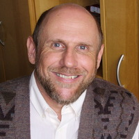

A Especialização em Terapia Familiar Sistêmica da FLT + EIRENE forma profissionais capazes de compreender os sistemas familiares por trás dos sintomas emocionais.
O Problema Clínico
Muitas vezes, toda a atenção clínica se concentra apenas no indivíduo que manifesta o sintoma. Mas a Terapia Familiar Sistêmica convida o profissional a compreender os padrões relacionais e familiares que sustentam o sofrimento emocional.
O genograma revela o que o sintoma não diz.
A Formação
Desenvolvida com rigor científico e profunda base teórica, a especialização integra psicologia sistêmica, teoria das comunicações humanas e prática clínica supervisionada.
Compreensão dos sistemas relacionais e dos padrões que sustentam o sofrimento emocional em contextos familiares e conjugais.
Identificação e manejo dos padrões relacionais que estruturam conflitos e sintomas nos subsistemas familiar e conjugal.
Ferramentas para mapeamento das gerações familiares e dos padrões transmitidos ao longo do tempo.
Análise dos ciclos interacionais e das estruturas de comunicação que perpetuam disfunções nas relações.
Desenvolvimento de técnicas e estratégias terapêuticas baseadas nos modelos sistêmicos contemporâneos.
195 horas de atendimentos reais com supervisão especializada em Câmara de Gessel e formato grupal.
Diferenciais
195 horas de atendimentos supervisionados com famílias e casais reais. A prática clínica não é simulação — é experiência formativa com casos verídicos, supervisionada por profissionais especializados e experientes.
Supervisão em tempo real através do espelho unidirecional — recurso exclusivo de centros de formação clínica avançados internacionalmente.
Psicologia, teoria sistêmica, dinâmica familiar e comunicação humana integrados em uma formação coerente e aplicável à clínica real.
Reconhecida pelo MEC e habilitação para solicitação do título junto à ABRATEF — reconhecimento formal para atuação especializada.
Desenvolvimento de manejo sistêmico profundo, ampliando a capacidade de leitura clínica e intervenção com indivíduos, casais e famílias.
Diferencial Exclusivo
Um dos grandes diferenciais da formação: a supervisão em tempo real através do espelho unidirecional, recurso característico dos centros de formação psicológica mais avançados do mundo.
O supervisor observa a sessão através do espelho, podendo orientar o terapeuta em formação com feedbacks imediatos.
Experiência formativa com casos clínicos reais, desenvolvendo competências técnicas e clínicas insubstituíveis.
Método utilizado pelos principais institutos de terapia familiar do mundo. A EIRENE traz essa tradição ao Brasil desde 1974.
Público-Alvo
Com CRP ativo e interesse em atendimento sistêmico
Que desejam integrar uma abordagem sistêmica ao tratamento clínico
Com interesse em saúde mental e dinâmica familiar
Profissionais que atuam com famílias em serviços de saúde mental
Profissionais que desejam título reconhecido pela ABRATEF
Professor responsável
Do início ao fim, a especialização é conduzida pelo Prof. Dr. Carlos Tadeu Grzybowski — com décadas de prática clínica e formação de terapeutas sistêmicos.

"Décadas de experiência na formação de terapeutas familiares sistêmicos."
Turma 18
5 bolsas de até 30% disponíveis para candidatos elegíveis.
Próximo Passo
Se você deseja ampliar sua atuação clínica e compreender os sistemas familiares por trás do sofrimento emocional, conheça a Especialização em Terapia Familiar Sistêmica da FLT + EIRENE do Brasil.
Turma 18 · Início Agosto 2026 · Vagas Limitadas · Curitiba/PR
FAQ
Sim. A Especialização em Terapia Familiar Sistêmica é promovida pela Faculdade Luterana de Teologia (FLT), instituição reconhecida pelo Ministério da Educação (MEC). Isso garante validade acadêmica ao título de especialista obtido ao término do curso.
A ABRATEF (Associação Brasileira de Terapia Familiar) é a principal entidade que reconhece e credencia terapeutas de família no Brasil. A conclusão desta especialização habilita o profissional a solicitar o título de Terapeuta de Família pela ABRATEF, reconhecimento importante para atuação especializada e diferenciada no mercado clínico.
A especialização é presencial, realizada em Curitiba/PR, com encontros mensais nas sextas-feiras e sábados. A presencialidade é fundamental para a qualidade da formação clínica, especialmente para as atividades de supervisão em Câmara de Gessel e os atendimentos com famílias e casais reais.
A especialização é destinada a profissionais de saúde mental e saúde da família: psicólogos com CRP ativo, psiquiatras, médicos de família e profissionais que atuam em contextos de saúde mental comunitária (CAPS e similares). Candidatos interessados na habilitação ABRATEF também são bem-vindos, desde que atendam aos critérios de formação de nível superior nas áreas de saúde.
A Câmara de Gessel é um espaço clínico composto por duas salas separadas por um espelho unidirecional. Enquanto o terapeuta em formação conduz o atendimento com a família ou casal, o supervisor e o grupo de alunos observam a sessão pela sala adjacente, sem interferir no processo terapêutico. Ao final, realiza-se uma supervisão aprofundada com feedbacks técnicos e clínicos. É um recurso formativo raro e de alto padrão internacional.
A especialização inclui 195 horas de prática clínica supervisionada, distribuídas ao longo dos 3 anos de formação. Os alunos realizam atendimentos reais com famílias e casais, supervisionados por profissionais experientes — parte em formato de Câmara de Gessel, parte em supervisão grupal. Este é um dos maiores diferenciais da formação: a prática não é simulada, mas desenvolvida com casos clínicos reais.